Beban dibayar dimuka adalah beban yang harus dikeluarkan lebih dahulu oleh perusahan namun haknya belum diterima. Macam-macam beban yang biasa dibayar dimuka oleh perusahaan antara lain :
a. Pembebanan Biaya Sewa
Contoh Soal :
Perusahaan Jaya Abadi pada tanggal 1 April 2018 dibayar sewa kios Rp 12.000.000,00 untuk satu tahun. Maka bagaimanakah jurnal penyesuaian untuk tahun 2018?
Jawab :
1) Pembayaran beban jika saat transaksi dicatat dengan pendekatan Neraca (saat transaksi diakui sebagai harta).
Jurnal saat transaksi:
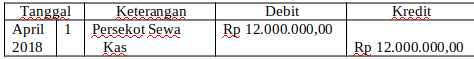
Jika akun ini tidak disesuaikan maka pada saat menyusun laporan keuangan dalam laporan neraca muncul akun Persekot Sewa sebesar Rp12.000.000,00 berarti laporan keuangan tidak mencerminkan keadaan yang sesungguhnya. Keadaan yang sesungguhnya kios tersebut sudah digunakan oleh perusahaan penyewa dari tanggal 1 April 2018 sampai dengan 31 Desember 2018 atau selama 9 bulan. Pemakaian 9 bulan ini seharusnya diakui sebagai beban. Banyaknya beban sewa selama 9 bulan bisa dihitung dengan cara 9/12 x Rp 12.000.000,00 = Rp 9.000.000,00. Jurnal penyesuaian yang dibuat pada akhir priode:
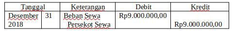
2) Pembayaran beban jika saat transaksi dicatat pendekatan Laba/ Rugi (saat transaksi langsung diakui sebagai beban).
Jurnal saat transaksi :
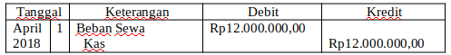
Dari jurnal di atas jika diposting ke buku besar, maka buku besar Beban Sewa akan ada saldo debet sebesar Rp 12.000.000,00 catatan ini jika tidak disesuaikan maka laporan keuangan tidak menunjukkan keadaan yang sebenarnya. Dari saat transaksi (tanggal 1 April 2018 sampai tutup buku tanggal 31 Desember 2018) penyewa sudah menempati selama 9 bulan. Maka beban yang sesungguhnya = 9/ 12 x Rp 12.000.000,00 = Rp 9.000.000,00. Agar catatan akun Beban Sewa menunjukkan saldo sesuai kenyataan (Rp 9.000.000,000) maka perusahaan membuat jurnal penyesuaian sebagai berikut:
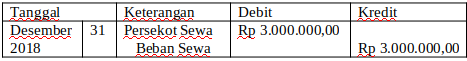
b. Pembebanan Biaya Iklan
Contoh Soal :
Perusahaan Jaya Abadi pada tanggal 1 Mei 2018 harus membayar biaya iklan sebesar Rp 3.000.000,00 untuk satu tahun. Maka bagaimanakah jurnal penyesuaian untuk tahun 2018?
Jawab :
1) Pembayaran beban jika saat transaksi dicatat dengan pendekatan Neraca (saat transaksi diakui sebagai harta).
Jurnal saat transaksi:
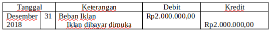
Jika akun ini tidak disesuaikan maka pada saat menyusun laporan keuangan dalam laporan neraca muncul akun Iklan dibayar dimuka sebesar Rp4.000.000,00 berarti laporan keuangan tidak mencerminkan keadaan yang sesungguhnya. Keadaan yang sesungguhnya iklan tersebut sudah digunakan oleh perusahaan dari tanggal 1 Mei 2018 sampai dengan 31 Desember 2018 atau selama 8 bulan. Pemakaian 8 bulan ini seharusnya diakui sebagai beban. Banyaknya beban iklan selama 8 bulan bisa dihitung dengan cara 8/12 x Rp 3.000.000,00 = Rp 2.000.000,00. Jurnal penyesuaian yang dibuat pada akhir priode:
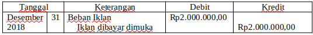
2) Pembayaran beban jika saat transaksi dicatat pendekatan Laba/ Rugi (saat transaksi langsung diakui sebagai beban).
Jurnal saat transaksi :
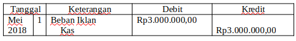
Dari jurnal di atas jika diposting ke buku besar, maka buku besar Beban Iklan akan ada saldo debet sebesar Rp 3.000.000,00 catatan ini jika tidak disesuaikan maka laporan keuangan tidak menunjukkan keadaan yang sebenarnya. Dari saat transaksi (tanggal 1 Mei 2018 sampai tutup buku tanggal 31 Desember 2018) perusahaan sudah menggunakan selama 8 bulan. Maka beban yang sesungguhnya = 8/ 12 x Rp 3.000.000,00 = Rp 2.000.000,00. Agar catatan akun Beban Iklam menunjukkan saldo sesuai kenyataan (Rp 2.000.000,000) maka perusahaan membuat jurnal penyesuaian sebagai berikut:
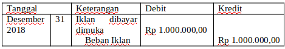
c. Pembebanan Biaya Asuransi
Contoh Soal :
Perusahaan Jaya Abadi pada tanggal 1 Juni 2018 harus membayar biaya asuransi sebesar Rp 12.000.000,00 untuk satu tahun. Maka bagaimanakah jurnal penyesuaian untuk tahun 2018?
Jawab :
1) Pembayaran beban jika saat transaksi dicatat dengan pendekatan Neraca (saat transaksi diakui sebagai harta).
Jurnal saat transaksi:
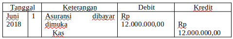
Jika akun ini tidak disesuaikan maka pada saat menyusun laporan keuangan dalam laporan neraca muncul akun Asuransi dibayar dimuka sebesar Rp12.000.000,00 berarti laporan keuangan tidak mencerminkan keadaan yang sesungguhnya. Keadaan yang sesungguhnya Asuransi tersebut sudah digunakan oleh perusahaan dari tanggal 1 Juni 2018 sampai dengan 31 Desember 2018 atau selama 7 bulan. Pemakaian 7 bulan ini seharusnya diakui sebagai beban. Banyaknya beban sewa selama 7 bulan bisa dihitung dengan cara 7/12 x Rp 12.000.000,00 = Rp 7.000.000,00. Jurnal penyesuaian yang dibuat pada akhir periode:
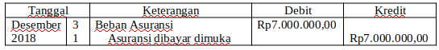
2) Pembayaran beban jika saat transaksi dicatat pendekatan Laba/ Rugi (saat transaksi langsung diakui sebagai beban).
Jurnal saat transaksi :
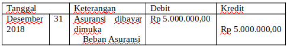
Dari jurnal di atas jika diposting ke buku besar, maka buku besar Beban Asuransi akan ada saldo debet sebesar Rp 12.000.000,00 catatan ini jika tidak disesuaikan maka laporan keuangan tidak menunjukkan keadaan yang sebenarnya. Dari saat transaksi (tanggal 1 Juni 2018 sampai tutup buku tanggal 31 Desember 2018) perusahaan sudah menggunakan asuransi selama 7 bulan. Maka beban yang sesungguhnya = 7/ 12 x Rp 7.000.000,00 = Rp 7.000.000,00. Agar catatan akun Beban Sewa menunjukkan saldo sesuai kenyataan (Rp 7.000.000,000) maka perusahaan membuat jurnal penyesuaian sebagai berikut: